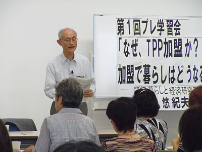

■講演要旨
1．TPPとは何か、TPP問題登場の背景
世界経済はGATTからWTO（世界貿易機関）体制で発展の後、特定2国間のFTAが主流に。TPPは2006年、シンガポール、ブルネイ、チリ、ニュージーランド4ヵ国間で調印され、大陸で孤立した米が2008年参入。現在11か国参加。内容は関税ゼロ、非関税障壁撤廃、制度・規制の同一化。21分野においてルール作り作業がおこなわれています。
2．TPP加盟、アメリカの狙い、日本の狙い
米国は輸出に活路を見出し、将来FTAAP（アジア太平洋自由貿易圏）を作るための足掛かりが狙い。日本は、GDPへの効果見込み0.66％程度でメリットはほとんどなく、他国が米国に賛同すれば、交渉で意見は通りにくい。「第三の開国」と言うが、非農産品の関税率、農産物輸入額についてはASEAN+3又は+6で、お互いの政府の方針を尊重の上で経済連携は可能という面から見て、十分開国しています。米国に対しての政治的な理由ではないでしょうか。
3．TPP加盟でどうなるか
一つには関税ゼロから生じる問題があります。主要農産物の生産額が大きく減少。オーストラリアの農家平均経営面積は日本の約2000倍あり、地形･気候･人件費から生産コストの高い日本は、効率化では対抗できません。例えば砂糖の国内生産は無くなり、高価なブランド･銘柄が残るほかは競争を強いられ生産ダウンします。
もう一つには、統一基準から生じる問題があります。食品安全基準の中では食品添加物規制緩和で「安心」とされる種類が現在の倍以上になります。残留農薬、ポストハーベスト農薬の基準も同様。遺伝子組み換え作物は“無害”の考えから、表示は不用と主張しています。
医療制度では、日本の国民皆保険制度に対し、米国は所得水準で医療費が異なり、医療の市場メカニズムを働かせる考えです。医薬品･医療機器の公定価格廃止、医薬品値上がり、医療費が増大します。「医療特区」限定での混合診療、株式会社の病院経営が解禁になります。日本政府の、現在の保険制度の負担と、米国の要求とが一致してしまう懸念があります。
その他、政府調達の分野で国際入札基準が引き下げられると、地元企業優先という自治体運営や独自の自治体政策ができなくなります。入国･滞在ルールの規制緩和で日本人の賃金水準が下がります。金融サービスのルールが変わることで、郵貯･簡保･共済が民間と同一条件となり、大きな市場を自由にできる等の変化が懸念されます。
また、ISD条項が組み込まれると外国企業が進出先の国で不利益を受けたと思えば、その国･政府を訴えることができ、ICSID（投資紛争国際解決センター）の判断に従わなくてはなりません。自国民の安全、健康、福祉、環境等を自らの基準で決められなくなります。
4．人々の意識レベルでTPP加盟論を支えるものは？
賛成論の根拠は何なのでしょうか。「自由」「自由貿易」信仰で自由が何をもたらすかよく考えずに支持しているのでは。「歴史の流れ」「アメリカ」信仰、アメリカについていく考え方と、中国を警戒する考えからの支持が存在します。